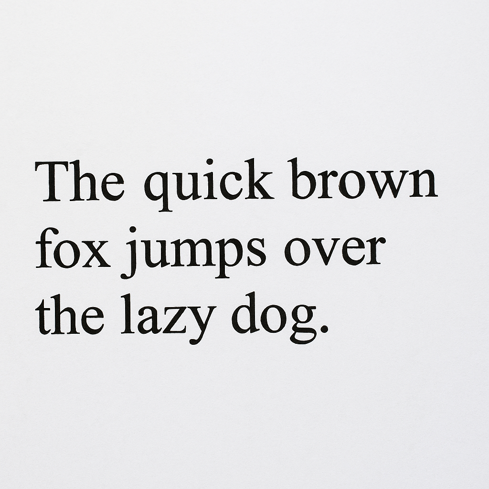

This endpoint extracts readable text from an uploaded image using Azure's OCR (Optical Character Recognition) technology.
The resulting response is an array of the texts/lines found.
here is an example:

[
"The quick brown",
"fox jumps over",
"the lazy dog."
]
Full URL Path
POST http://146.190.147.242:3000/api/extract-words
Headers
{
"Content-Type": "multipart/form-data"
}
Request Body
An image file uploaded as multipart/form-data. The field name should be photo.
Example API Call (Postman)
Follow these steps to test the /extract-words endpoint using Postman:
Open Postman and create a new POST request.
Set the URL to: http://146.190.147.242:3000/api/extract-words
Under the Headers tab, verify that you have:
Key: Content-Type
Value: multipart/form-data
Note: Postman will automatically manage the boundary for you.
Switch to the Body tab and select form-data.
Add a new key called photo.
Set the type to File and upload your image file.
Click Send to submit your request. The response will contain JSON text data extracted from the image.
Error Codes
If something goes wrong, the API will respond with appropriate error codes:
400 Bad Request — No file was uploaded. Ensure the request includes a file named photo in the form-data.
415 Unsupported Media Type — The file type is not an image. Upload only JPEG, PNG, or BMP files.
500 Internal Server Error — An unexpected error occurred while processing.
This can be caused by various reasons such as:
The image may be too small or large. Azure requires dimensions between 50×50 and 16,000×16,000 pixels.
There may be a connection error with the Azure Computer Vision service.